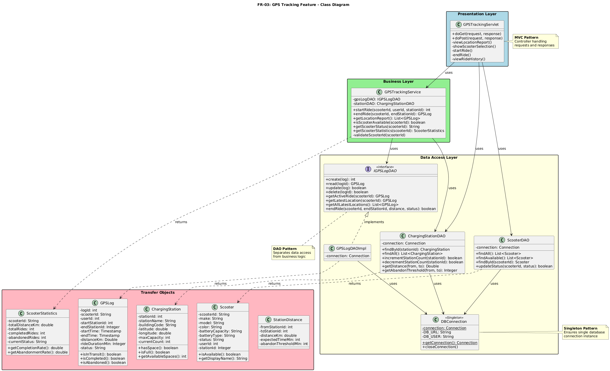
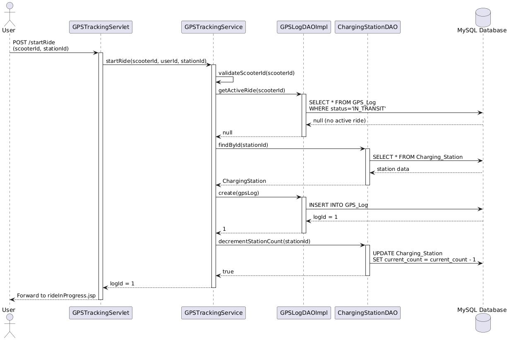
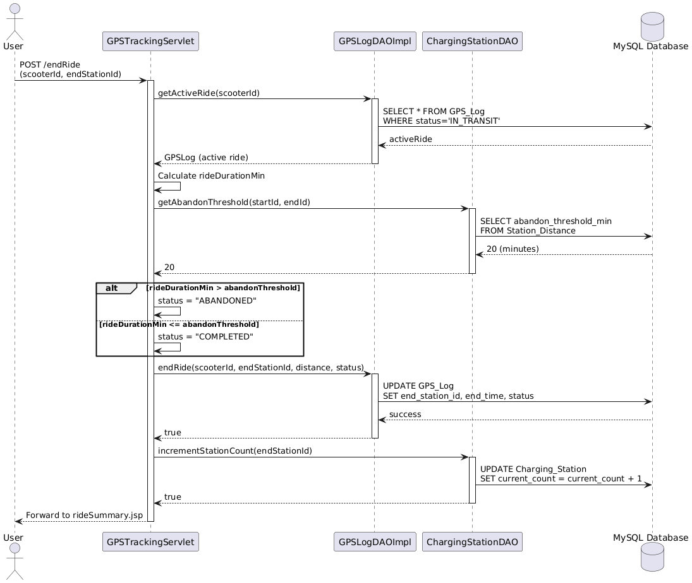

A 3-tier web application built for a simulated Algonquin Students Association e-scooter sharing program — tracking real-time scooter locations, energy usage, and maintenance across campus. Built by a 5-person team using Java Servlets, JSP, MySQL, and Tomcat, with each member independently owning a full feature vertical (view, business logic, and data access layers).
I independently designed and built the GPS Tracking module (FR-03) end to end — the presentation, business logic, and data access layers for real-time scooter location tracking.

Class diagram showing the layered architecture, DAO pattern, and Singleton database connection.

Starting a ride: validates the scooter is available, confirms the station, and logs the new ride.

Ending a ride: calculates duration and distance, and flags rides exceeding the abandonment threshold.
Java · Java Servlets · JSP · JDBC · MySQL · Tomcat · Maven
Built as one of five feature verticals in a team project. Full source isn't public since it includes teammates' code — the diagrams and description above reflect my individually authored module (FR-03).